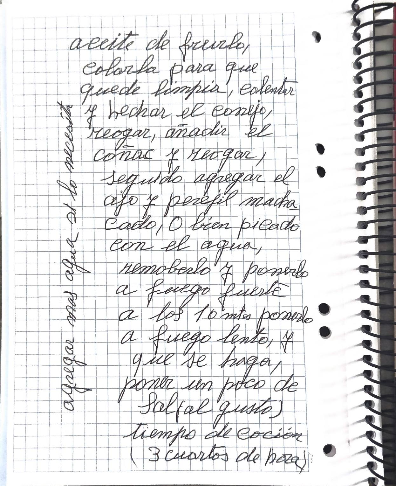

Conejo al ajillo

Versión editada para cocinar. Lo que ella escribió, palabra por palabra, está en «Cuaderno».
Ingredientes
Preparación
- Salar el conejo troceado y pasarlo por la harina.
- Poner una sartén con el aceite. Cuando esté caliente, refreír el conejo para que se dore. Una vez dorado, sacarlo a una fuente.
- Poner una paellera pequeña con el aceite de freírlo, colado para que quede limpio.
- Calentar, echar el conejo y rehogar. Añadir el coñac y rehogar.
- Seguido, agregar el ajo y el perejil, machacados o bien picados, con el agua.
- Removerlo y ponerlo a fuego fuerte. A los 10 minutos, ponerlo a fuego lento y que se haga.
- Poner un poco de sal, al gusto.
Tiempo de cocción: tres cuartos de hora.
Notas de mamá
«Agregar más agua si lo necesita.»
Avisos y dudas
- La sal sale dos veces: al principio (salar el conejo) y al final (al gusto). Lo dejo como está.
- En «1 kilo» la K está escrita encima de otra letra; la lectura es clara.
Tal como lo escribió

Transcripción fiel, con su ortografía. Lo que va entre corchetes son aclaraciones de la transcripción.
Conejo al ajillo (3 per.)
1 conejo de 1 kilo y 200 g. 75 ml. de aceite, 30 gr. de ajo, 6 gr. de perejil, 55 ml. de coñac, 300 ml de agua, harina, y Sal
(modo de hacerlo)
Salar el conejo troceado, pasarlo por la harina, poner una Sarten con la aceite cuando este caliente Refreir el conejo para que se dore, una vez dorado, sacarlo para una fuente. poner una paellera pequeña, poner la aceite de freirlo, colarla para que quede limpia, calentar y hechar el conejo, reogar, añadir el coñac y reogar, seguido agregar el ajo y perejil machacado, O bien picado con el agua, remobelo y ponerlo a fuego fuerte a los 10 mtos ponerlo a fuego lento, y que se haga, poner un poco de Sal (al gusto) tiempo de cocción (3 cuartos de hora)
agregar mas agua si lo necesita
En la cocina
Esta receta todavía no tiene fotos.